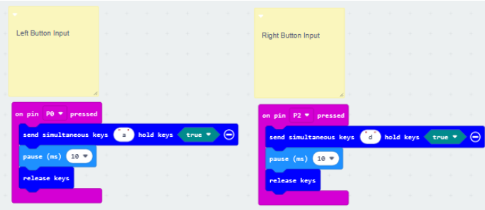
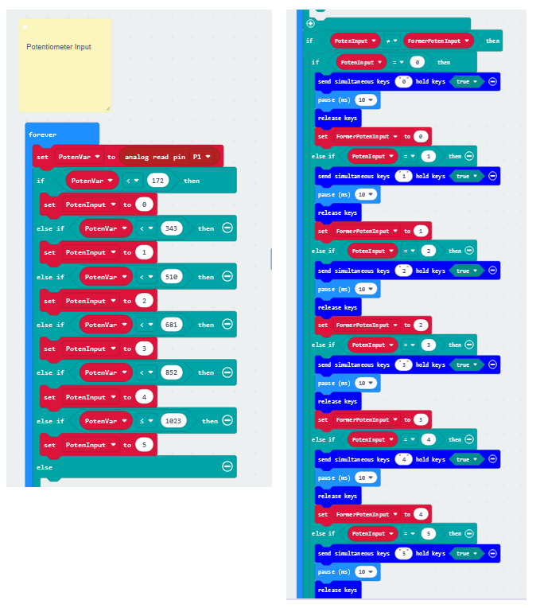

Gacha-mon
Gameplay
Download Here: Itch.io Link
Project Files: Github Repository
Overview
Developed in Godot for an Alternative Controllers class, this project is inspired by gacha games and capsule toy vending machines. The game is split into two parts, the gacha roll and the battle section. Players can roll for more gacha-mons and use said gacha-mons in a turn-based battle system. The reward for winning a battle against an enemy NPC is coins which can be used for more rolls, making for a simple yet effective gameplay loop.Goal
Since this was for an Alt Controllers class, my roles were designing the gacha-mon creatures and the enemy NPC designs, and creating a physical alternative controller utilizing a Microbit Controller and Breadboard circuit that acts as a physical interface that interacts with the game. In addition to the controller, I would code the output from the controller that sends information to the PC.. I would also work and code for the gacha system, the experience meant to emulate the gachapon machines. My partner would work on the UI/UX design and the battle system.Development
My primary roles were designing the gacha system, creating the alternative controller, and coding the interactions between the controller and the game. This project was a deep dive into hardware-software integration, requiring me to bridge the gap between physical input and digital gameplay.Designing the Alternative Controller

The alternative controller was the centerpiece of the project, designed to emulate the tactile experience of using a gashapon machine. We used a Microbit kit and a breadboard to create a circuit with three inputs: two buttons and a potentiometer. All the parts were provided by the professor in the class. The first step was building and testing the circuit. Using Microbit MakeCode, I wrote block-based code to handle the inputs:
- The buttons acted as confirm (`A`) and cancel (`D`) inputs.
- The potentiometer acted as a dial, sending analog values between 0 and 1023.
To simplify the process, I decided to emulate keyboard inputs instead of directly interfacing with Godot via electrical signals. This approach allowed me to bypass the complexity of translating raw electrical data into something Godot could interpret. I went with this approach as converting electric signals into receivable digital signals, especially translating it into something Godot can interpret, was beyond my understanding and scope of the project. I tested the circuit by plugging the Microbit into my computer and opening a text document. Pressing the buttons and turning the potentiometer resulted in the expected keyboard inputs (`A`, `D`, and numbers 0–5). However, I noticed that the buttons sometimes registered as long presses instead of single presses. To fix this, I added a millisecond delay in the Microbit code to ensure the button press was registered as a single input.

Gashapon Crank Mechanic
Since the core of this controller is the crank mechanism, I realized the potentiometer fits the solution perfectly. The way to interact with a potentiometer is like a dial-like system similar to crank mechanisms in gashapon machines. According to documentation, the potentiometer’s analog input ranged from 0 to 1023. To use it as a dial for menu navigation, I divided the range into five sections, each corresponding to a number key (0–5). This allowed the player to navigate menus by turning the dial:- If the current value was less than the previous value, it emulated a left movement.
- If the current value was greater, it emulated a right movement.

Assembling The Alternative Controller
For the casing of the alternative controller, we bought a gashapon cardboard model from Amazon. We then modified it to fit the Microbit and breadboard, and then attach the dial to the potentiometer and made buttons that connect to the breadboard. There is an additional crank that is comes along with the kit. This was used outside the game to dispense a card that represents a prize for the players to win after playing our game.Alternative Controller Demo
Gacha System in Godot
With the controller working, I shifted my focus to the gacha system. The system had two states:1. Start State: The player is prompted to insert a coin by pressing the `A` button.
2. Roll State: The player turns the potentiometer to simulate cranking the gashapon machine.
When the potentiometer reached its maximum value, the game played an animation and randomly selected a monster from a pool of six designs. The monster was then added to the player’s inventory, which was managed by a Game Manager in Godot. Navigation and inputs in the game can all be done from the Microbit Breadboard controller, as we essentially found a means to replicate keyboard inputs.
The inventory system was built using Godot’s flexible **array list** structure. Each monster was represented as a node, and the array list allowed for easy addition and retrieval of monsters. The inventory was accessible across different parts of the game, including the gacha system and the battle system.
To handle duplicates, the system checked if the monster already existed in the inventory before adding it. If there is a duplicate in the rolls, the monster isn’t added.
Monster Designs
For the monster designs, we decided on a total of 6 playable monsters. The design inspirations were a mix of Pokemon and Neopets. And I themed the monsters around 3 elements, with 2 monsters representing an element. The main elements were fire, water, and grass, calling back to the original Pokemon starters. I tried to design the monsters to range from being cute to goofy and derpy. For the enemies, I initially themed the first 4 around the color purple, having varied designs. The last two enemy monsters I based around weapons, a hammer and a sword. The last one in particular was inspired by Ceruledge and Armarouge from Pokemon.The art program I used to draw the designs was Medibang.

Collaboration and Playtesting
My partner handled the UI/UX design and battle system, which featured a turn-based combat system where players battled a gauntlet of enemies. Winning battles rewarded coins, which could be used for more gacha rolls, creating a satisfying gameplay loop. Since they were in charge of the turn-based battles.Playtesting revealed a few issues, such as menu navigation feeling clunky and the controller occasionally failing to register inputs. These were addressed by fine-tuning the potentiometer’s sensitivity and adding visual feedback for the gacha crank mechanic. However, during playtests, because of our inexperience with DIY builds, we had to constantly fix and adjust the alternative controller to ensure the play experience felt right.